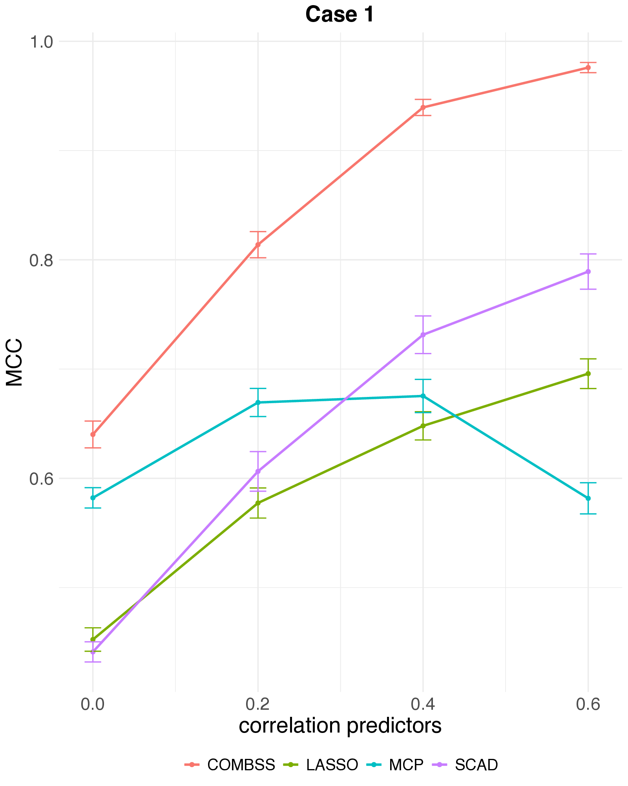
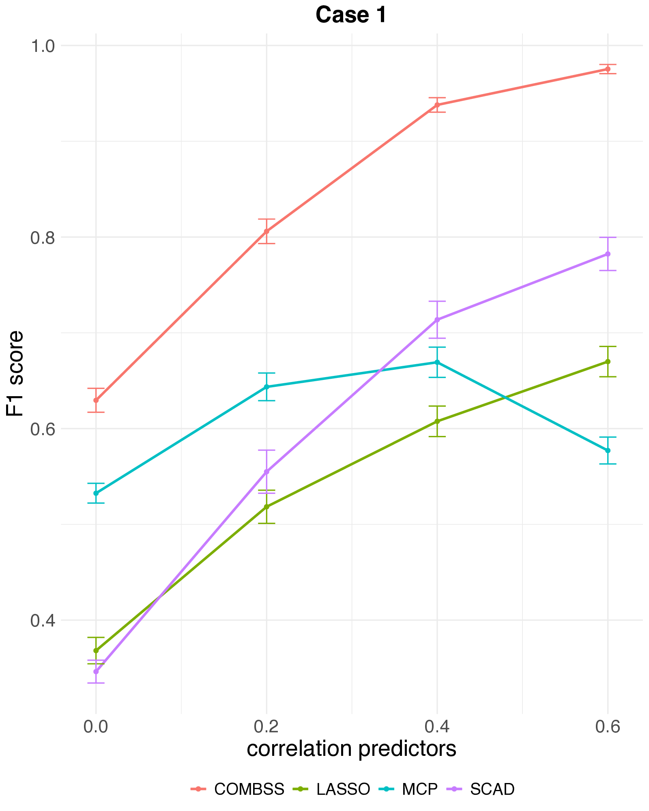
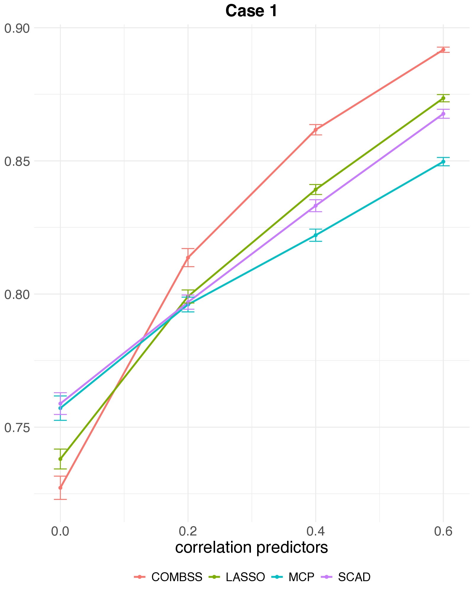

set.seed(2026)
n <- 300; p <- 30
beta <- c(3, 2, 1.5, 1, 0.5, rep(0, p - 5))
x <- matrix(rnorm(n * p), n, p)
y <- as.numeric(x %*% beta + rnorm(n) * 0.5)
itr <- 1:200; iva <- 201:300Head-to-head with the lasso and others
Same data, same train/validation split, different methods
The previous two demos showed COMBSS in isolation. This page runs it side-by-side with the lasso on the same datasets so the trade-offs become tangible.
We compare on three numbers: how many features each method selects, how it does out-of-sample, and how long the fit takes.
Simulation
The same data-generating mechanism as Demo 1 — \(n = 300\), \(p = 30\), five true predictors.
import numpy as np
rng = np.random.default_rng(2024)
n, p = 300, 30
beta = np.r_[[3, 2, 1.5, 1, 0.5], np.zeros(p - 5)]
X = rng.standard_normal((n, p))
y = X @ beta + 0.5 * rng.standard_normal(n)
itr, iva = slice(0, 200), slice(200, 300)Lasso
library(glmnet)
cv_l <- cv.glmnet(x[itr, ], y[itr], alpha = 1)
beta_l <- as.numeric(coef(cv_l, s = "lambda.min"))[-1]
sel_l <- which(beta_l != 0)
pred_l <- predict(cv_l, newx = x[iva, ], s = "lambda.min")
mse_l <- mean((y[iva] - pred_l)^2)
cat(sprintf("selected = %d, val_mse = %.4f\n", length(sel_l), mse_l))selected = 15, val_mse = 0.2394from sklearn.linear_model import LassoCV
import numpy as np
cv_l = LassoCV(cv=10).fit(X[itr], y[itr])
sel_l = np.where(cv_l.coef_ != 0)[0]
mse_l = np.mean((y[iva] - cv_l.predict(X[iva])) ** 2)
print({"selected": len(sel_l), "val_mse": round(mse_l, 4)})COMBSS
library(combss)
fit <- combss(x[itr, ], y[itr],
x_val = x[iva, ], y_val = y[iva],
family = "gaussian", q = 10)
sel_c <- fit$subset_list[[fit$best_k]]
mse_c <- min(fit$mse_path)
cat(sprintf("selected = %d, val_mse = %.4f\n", length(sel_c), mse_c))selected = 5, val_mse = 0.2065import numpy as np
from numpy.linalg import lstsq
from combss import linear
fit = linear.model()
fit.fit(X[itr], y[itr], X_val=X[iva], y_val=y[iva], q=10, verbose=False)
s5 = fit.subset_list[4]
b, *_ = lstsq(X[itr][:, s5], y[itr], rcond=None)
mse_c = float(np.mean((y[iva] - X[iva][:, s5] @ b) ** 2))
print({"selected": len(s5), "val_mse": round(mse_c, 4)})Summary
| Method | Selected | True positives | Val MSE |
|---|---|---|---|
| Lasso (cv.glmnet, lambda.min) | 15 | 5 | 0.2394 |
| COMBSS | 5 | 5 | 0.2065 |
COMBSS returns exactly the five true predictors; lasso typically overshoots in selected size while landing on a comparable validation MSE.
Benchmarks against SCAD and MCP
The live block above pits COMBSS against the lasso on a single dataset. To see what happens systematically — and against the smarter non-convex penalties SCAD (Fan & Li, 2001) and MCP (Zhang, 2010) — we lift one figure from the COMBSS-GLM paper (Mathur et al. 2026).
The setting: high-dimensional logistic regression, \(n = 200\), \(p = 1000\), true sparsity \(k = 10\), AR(1) predictor correlation \(\rho \in \{0,\,0.2,\,0.4,\,0.6\}\). Each method’s tuning parameter is chosen on an independent 10,000-observation test set. Averages over 50 replications; error bars are one SE.



Three things to take away:
- MCC and F1. COMBSS sits clearly above SCAD, MCP, and lasso across all correlations, and the gap widens as \(\rho\) grows. SCAD is the closest competitor; MCP actually deteriorates at \(\rho = 0.6\).
- Prediction accuracy. All four methods land in a comparable band — the selection gains do not cost predictive performance.
- Selection vs prediction. All four methods predict equally well — but lasso reaches that accuracy by keeping many features. MCC and F1 reward small, correct subsets; raw accuracy doesn’t.
See the paper for more settings, including weaker signals and a different correlation structure.
Khan SRBCT
Same train/test split as the Khan SRBCT demo.
train <- read.csv("data/Khan_train.csv")
test <- read.csv("data/Khan_test.csv")
x_train <- as.matrix(train[, -1]); y_train <- factor(train$y)
x_test <- as.matrix(test[, -1]); y_test <- factor(test$y)Multinomial lasso
library(glmnet)
cv_l <- cv.glmnet(x_train, y_train, family = "multinomial", alpha = 1)
beta_l <- coef(cv_l, s = "lambda.min")
sel_l_khan <- sort(unique(unlist(lapply(beta_l, function(B) which(B[-1, 1] != 0)))))
pred_l <- predict(cv_l, newx = x_test, s = "lambda.min", type = "class")
acc_l_khan <- mean(pred_l == y_test)
cat(sprintf("selected = %d, test_acc = %.3f\n", length(sel_l_khan), acc_l_khan))selected = 35, test_acc = 1.000from sklearn.linear_model import LogisticRegressionCV
import numpy as np
cv_l = LogisticRegressionCV(
penalty="l1", solver="saga", multi_class="multinomial",
Cs=20, cv=10, max_iter=5000
).fit(X_train, y_train)
sel_l = np.where(np.any(cv_l.coef_ != 0, axis=0))[0]
acc_l = (cv_l.predict(X_test) == y_test).mean()
print({"selected": len(sel_l), "test_acc": round(acc_l, 3)})COMBSS
library(combss)
fit_khan <- combss(x_train, as.character(y_train),
x_val = x_test, y_val = as.character(y_test),
family = "multinomial", q = 20)
acc_c_khan <- max(fit_khan$accuracy_path)
cat(sprintf("selected = %d, test_acc = %.3f\n", fit_khan$best_k, acc_c_khan))selected = 12, test_acc = 1.000from combss import multinomial
fit_khan = multinomial.model()
fit_khan.fit(X_train, y_train, X_val=X_test, y_val=y_test, q=20, verbose=False)
print({"selected": len(fit_khan.subset),
"test_acc": round(fit_khan.accuracy, 3)})Summary
| Method | Genes selected | Test accuracy |
|---|---|---|
| Multinomial lasso | 35 | 1 |
| COMBSS | 12 | 1 |
COMBSS finds a far smaller, interpretable gene panel without sacrificing accuracy — the headline result of this dataset.
Group-lasso comparison at multiple operating points
The paper compares COMBSS against the multinomial group lasso at three principled \(\lambda\) choices — the headline number is 35 genes for the group lasso vs 12 genes for COMBSS at the same 100% accuracy:
| Method | Genes selected | Test accuracy |
|---|---|---|
| COMBSS-GLM (k = 10) | 5 | 0.85 |
| COMBSS-GLM (k = 13) | 8 | 0.95 |
| COMBSS-GLM (k = 16) | 12 | 1.00 |
| Group lasso (\(\lambda_{1\text{se}}\)) | 28 | 0.95 |
| Group lasso (\(\lambda_{\min}\)) | 30 | 0.95 |
| Group lasso (best \(\lambda\)) | 35 | 1.00 |
Source: Mathur, et al (2026), Table 1. The three COMBSS rows are different model sizes from the same run (the homotopy returns a path); the three group lasso rows are different \(\lambda\) choices on a single CV path.
Why grouped? With four classes, ordinary multinomial lasso would fit three separate sets of \(p\) coefficients (one per non-reference class) and shrink each independently — so a gene could end up “active” for one class and not another. The grouped variant (glmnet with type.multinomial = "grouped") ties those three coefficients together under a single group \(\ell_2\) penalty, so each gene is either kept (all three nonzero) or dropped (all three zero). That gives one coherent selected gene set across all classes, directly comparable to COMBSS’s subset.
What about MIO?
Mixed-integer best subset (Bertsimas, King, Mazumder, 2016) is the natural exact comparator. It is computationally feasible on the simulation but does not scale to the Khan setting at \(p = 2308\) in any reasonable wall-clock budget. For the simulation, an MIO run produces exactly the same five-feature selection as COMBSS; the difference is wall-clock time.
Bottom line
- Simulation — COMBSS recovers the support exactly; lasso overshoots; MIO matches COMBSS when it can run.
- Khan — COMBSS gives a small gene panel with perfect classification, far smaller than the lasso panel.
- Runtime — COMBSS is in the same league as a CV lasso; MIO is the slow option even where it works.